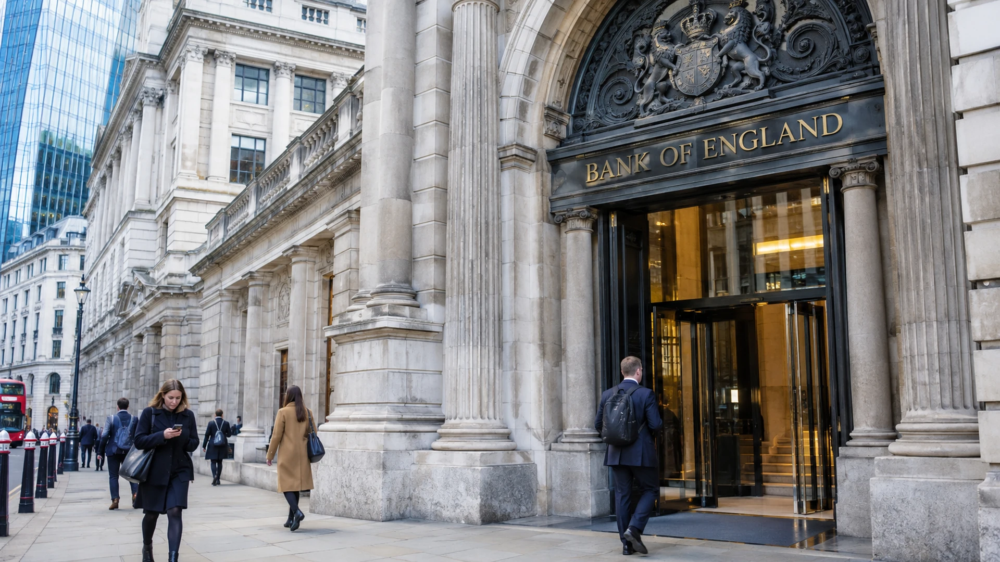

Bank of England Faces First Rate Increase Since 2023 as Energy Inflation Returns
Markets are bracing for a Bank of England rate increase as energy costs revive inflation risks. The bigger signal may come from what policymakers say about 2027.

The Bank of England enters the first week of November facing a monetary policy decision that looks straightforward in the near term but unusually difficult beyond it. Economists surveyed by Reuters expect the Monetary Policy Committee to increase Bank Rate from 3.75% to 4.0% at its meeting on Thursday, November 5, responding to persistent inflation pressure from higher energy costs. It would be the central bank’s first interest-rate increase since 2023. The expected move is not yet a decision: the vote, policy statement and accompanying guidance remain to be published.
Why the rate discussion has changed
Britain’s inflation problem has become harder to treat as a temporary rise in imported costs. Consumer prices were 3.5% higher in September than a year earlier, according to the figures cited in Reuters’ November 2 report. That was above the 3.0% inflation rate the Bank of England had forecast in July. The discrepancy matters because monetary policy must act ahead of price changes, rather than wait for every additional increase to materialise in official statistics.
Energy costs are the central source of anxiety. Higher oil and gas prices can first appear in fuel bills and utility charges, then spread into transport, manufacturing and service prices. A central bank cannot produce additional energy supplies through higher interest rates. It can, however, attempt to stop a temporary shock from changing businesses’ pricing behaviour and workers’ expectations about future wage growth. That is the distinction policymakers refer to when discussing second-round inflation effects. See also our analysis of international energy infrastructure investment.
Governor Andrew Bailey has warned that waiting for conclusive proof of these effects could mean acting too late. Yet higher borrowing costs also cool credit, property activity and consumer spending at a moment when the economy remains uneven. For households refinancing mortgages, a quarter-point increase is not merely an abstract financial-market event. It can add to monthly payments while energy and other essential costs are already elevated.
An unusually complicated vote
The Monetary Policy Committee voted six to three to keep the rate unchanged in September, revealing a genuine difference in judgment. Some members emphasise spare capacity and the danger of weakening demand unnecessarily. Others worry that inflation persistence will prove more expensive to reverse if action is postponed. Reuters’ poll points to a possible seven-to-two vote for a November increase, though the actual decision could differ.
Markets and economists are also separated by their expectations for next year. Interest-rate markets have priced the possibility of three or four further quarter-point increases in 2027, implying a Bank Rate between 4.75% and 5.0%. Analysts quoted by Reuters are more circumspect. The Bank could signal that a November increase is a precaution against an inflation shock rather than the opening step of a predetermined tightening cycle.
This divergence is important for sterling and British government bonds. Financial assets respond not only to the rate announced this week but to expectations for the entire path of policy. A hike accompanied by careful language about uncertainty could be interpreted differently from the same hike alongside explicit warnings about further increases. A more cautious message might reduce expectations for 2027 even as the Bank delivers an immediate rise.
What borrowers and businesses should watch
For businesses, the policy trade-off is particularly uncomfortable. Firms exposed to energy and imported materials face rising costs, but the ability to pass them to customers varies sharply by sector. Companies with little pricing power may absorb those costs in profit margins. Others may raise prices, helping to entrench inflation. Higher interest rates can also increase the cost of inventory, investment and working capital, leaving businesses exposed from both sides.
Mortgage lenders and property buyers will pay attention to what happens to medium-term swap rates, which influence fixed mortgage products. The relationship is not mechanical: lenders may already have incorporated the anticipated move into their pricing. Still, guidance that changes market expectations can alter mortgage offers even when the immediate policy-rate decision itself was widely expected.
Investors should also separate the Bank’s domestic mandate from the global energy outlook. Developments in energy diplomacy or commodity supply could change the path of inflation in either direction. A retreat in energy prices would not automatically undo price increases already transmitted through the economy, but it could reduce the need for repeated monetary tightening. Conversely, a prolonged shock would make patience harder to defend.
The decision is only the beginning
Thursday’s statement, the vote split and Bailey’s explanation will therefore carry as much weight as the rate number. Analysts will look for evidence that the committee expects inflation to subside, for changes to growth assumptions and for any distinction between short-term vigilance and longer-term policy restraint.
The central point is that a widely forecast increase to 4.0% would not settle the direction of borrowing costs in 2027. It would show how the Bank of England is responding to a renewed inflation threat. Whether that response becomes a sustained tightening campaign depends on incoming price, wage and economic activity data, not on one meeting alone.
Sources and methodology
Primary sources and supporting documentation.